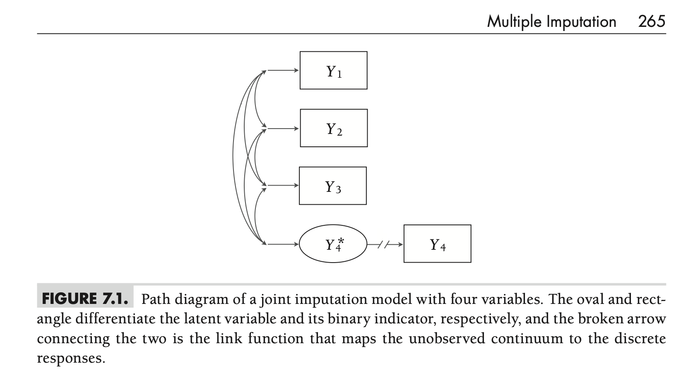

Goal of Missing Data Analysis Methods
- Maximum Likelihood (ML) & Bayesian Estimation:
- Primary goal: Fit a model to observed data and use estimates for research questions
- Missing data handling occurs “behind the scenes”
- ML deduces missing parts via the normal curve; Bayesian imputes values en route to parameters
- Imputation is a means to an end (getting estimates)
- Multiple Imputation (MI):
- Puts filled-in data “front and center”
- Goal: Create suitable imputations for later analysis
The Multiple Imputation Process: 3 Steps
- Imputation:
- Specify an imputation model
- Use an MCMC algorithm to create multiple (M) copies of the data, each with different imputed values
- Often uses MCMC algorithms for regression models or covariance matrices
- Analysis:
- Perform the desired analysis (or analyses) on each of the M completed datasets
- Obtain point estimates and standard errors from each analysis
- Compatible with the frequentist statistical paradigm
- Pooling:
- Combine the estimates and standard errors from the M analyses into a single set of results
- Uses “Rubin’s rules”
History & Chapter Focus
- Origins: Proposed by Donald Rubin in 1977 for missing survey data. Seminal text published in 1987. Usage has grown significantly since
- Diversity: MI includes a diverse collection of procedures
- Chapter Focus:
- Strategies based on Bayesian estimation routines for regression and multivariate normal data
- Includes Joint Model Imputation and Fully Conditional Specification (FCS)
- Emphasis on analyzing the imputed datasets and summarizing results
Two Rounds of Modeling
Multiple imputation involves two distinct modeling steps:
- Imputation Model:
- Fitted to the observed data
- Uses resulting estimates (often via MCMC) to create imputed datasets
- Analysis Model:
- The model(s) of substantive interest
- Fitted to each of the imputed datasets
- Results are aggregated (pooled)
Important Note: The imputation and analysis models do not need to be the same statistical model
Agnostic Imputation
- Definition: The imputation model differs from the substantive analysis model
- Goal: To apply a flexible, nonrestrictive model not dedicated to one specific analysis
- The resulting imputed datasets could potentially be used for several different analyses
- Crucial: The imputation model must still be flexible enough to preserve important features of the planned secondary analyses and not impose conflicting restrictions
Model-Based Imputation
- Definition: The imputation model is the same as the focal analysis model (though it might include additional auxiliary variables)
- Goal: To tailor the imputations specifically for one analysis model
- This approach is necessarily narrow in scope compared to agnostic imputation
When to Use Which?
The choice depends on the composition of the analysis model:
Agnostic Imputation: Well-suited for analyses that do not include special features like interactions, polynomial terms, or random effects. Often intermediate in scope (e.g., for all analyses in one paper).
Model-Based Imputation: Usually ideal when the analysis model does include nonlinear effects (interactions, polynomials, random effects).
Note: It’s acceptable to use both approaches within the same project if needed
Core Idea & Development
- Foundation: Derives from applying a multivariate distribution to a set of incomplete variables
- Popularization: Largely attributed to Joe Schafer (1997, 1999). Early methods focused on multivariate normal or multinomial distributions.
- Modern Approach: Contemporary variants often (but certainly not always) use latent response formulations to handle mixtures of continuous, binary, ordinal, and nominal variables
Example: Math Achievement Data
Data: Pretest (MATHPRE) and Posttest (MATHPOST) math scores, plus academic variables (\(N=250\))
Missingness: Pretest complete, Posttest 16.8% missing.
Analysis Goal: Examine change over time using a difference score: \(CHANGE_i = Y_{2i} - Y_{1i} = MATHPOST_i - MATHPRE_i\)
Analysis Model (Empty Regression):
\[CHANGE_i = \beta_0 + \epsilon_i,\]
where \(CHANGE_i \sim N_1(\beta_0, \sigma_{\epsilon}^2)\) (\(\beta_0\) is the average change)
Incorporating Auxiliary Variables
- Benefit: MI readily accommodates an inclusive analysis strategy using auxiliary variables
- Included Variables:
- Standardized reading scores (STANREAD) - 10.4% missing
- Binary Free/Reduced Lunch indicator (FRLUNCH) - 5.2% missing
- Purpose: Although not predicting missingness directly here, they improve power by explaining variance in posttest scores (“Type B” auxiliary variables)
Joint Model (JM) Imputation Model Setup
- Variables Included:
- \(Y_1\): MATHPRE (Pretest Math)
- \(Y_2\): MATHPOST (Posttest Math)
- \(Y_3\): STANREAD (Standardized Reading)
- \(Y_4\): FRLUNCH (Lunch Assistance - Binary)
- Latent Variable: The binary \(Y_4\) is modeled via a latent continuous variable \(Y_4^*\).
- Model: An empty multivariate regression using a multivariate normal distribution for \(Y_1, Y_2, Y_3, Y_4^*\): \[
\begin{pmatrix} Y_{1i} \\ Y_{2i} \\ Y_{3i} \\ Y_{4i}^* \end{pmatrix} \sim N_4 \left( \begin{pmatrix} \mu_1 \\ \mu_2 \\ \mu_3 \\ \mu_4 \end{pmatrix}, \mathbf{\Sigma} \right)
\]
- \(\boldsymbol{\mu}\) is the mean vector.
- \(\mathbf{\Sigma}\) is the covariance matrix (variance of \(Y_4^*\) fixed to identify the metric).
Model Visualization & Type
Figure 7.1
Model Visualization & Type
- Path Diagram: Figure 7.1 visualizes this model.
- Rectangles for observed variables (\(Y_1, Y_2, Y_3, Y_4\))
- Oval for the latent variable (\(Y_4^*\))
- Broken arrow (\(Y_4^* \to Y_4\)) represents the link function (threshold)
- Curved arrows represent covariances
- Agnostic Approach: This imputation model is considered agnostic
- It differs substantially from the simple analysis model (Equation 7.2)
- However, the multivariate normal assumption for imputation doesn’t conflict with the analysis model’s assumptions
Missing Data Imputation in Joint Models
The Logic: From Parameters to Regressions
- Imputing multivariate normal data involves converting the estimated parameters (mean vector \(\boldsymbol{\mu}\) and covariance matrix \(\mathbf{\Sigma}\)) into a series of regression models
- A specific regression model is derived for each unique missing data pattern observed in the data
- MCMC is used to sample imputations based on these derived regressions
Example: Missing Only \(Y_2\) (Posttest Math)
- For cases missing only \(Y_2\), the process requires the regression of \(Y_2\) on the observed variables (\(Y_1, Y_3, Y_4^*\)).
- MCMC samples imputations for \(Y_{2i(mis)}\) from its conditional normal distribution: \[
Y_{2i(mis)} \sim N_1(E(Y_2|Y_1, Y_3, Y_4^*), \sigma_{2|134}^2)
\]
- \(E(Y_2|...)\) is the predicted score (mean of the distribution)
- \(\sigma_{2|134}^2\) is the residual variance (spread of the distribution)
Example: Missing \(Y_2\) and \(Y_4^*\) (Posttest & FRLunch*)
- For cases missing both \(Y_2\) and the latent \(Y_4^*\), imputation requires the multivariate regression of \((Y_2, Y_4^*)\) on the observed variables (\(Y_1, Y_3\))
- MCMC samples imputations from a bivariate normal distribution: \[
\begin{pmatrix} Y_{2i(mis)} \\ Y_{4i(mis)}^* \end{pmatrix} \sim N_2 \left( \begin{pmatrix} E(Y_2|Y_1, Y_3) \\ E(Y_4^*|Y_1, Y_3) \end{pmatrix}, \mathbf{\Sigma}_{24|13} \right)
\]
- Imputations are predicted values plus error (correlation via off-diagonals in \(\mathbf{\Sigma}_{24|13}\))
Imputing Categorical Variables (via Latent)
- Notice that imputations for the binary FRLUNCH variable (\(Y_4\)) are generated on the latent metric (\(Y_4^*\))
- This isn’t fully necessary as one can also impute the binary variable directly (which the R package
mice does)
- The discrete imputed value (0 or 1) is determined by the location of the latent imputation (\(Y_{4i(mis)}^*\)) relative to the estimated threshold parameter
- e.g., \(Y_{4i(mis)}^* > \tau \implies Y_{4(mis)} = 1\)
- e.g., \(Y_{4i(mis)}^* \le \tau \implies Y_{4(mis)} = 0\)
- The resulting dichotomous imputations are only needed when saving the final imputed dataset, not during the MCMC estimation process itself
- This is based on a formal link, not an ad hoc rounding scheme
Saving Filled-In Data Sets for Later Analysis
Goal & Basic MCMC Process
- Goal: Joint model imputation uses Bayesian estimation, but the primary aim is saving filled-in datasets, not interpreting the imputation model parameters themselves
- MCMC Steps (per iteration):
- Estimate mean vector (\(\boldsymbol{\mu}\)) conditional on current covariance (\(\mathbf{\Sigma}\)) and data
- Estimate covariance matrix (\(\mathbf{\Sigma}\)) conditional on new \(\boldsymbol{\mu}\) and data
- Update missing values (including latent scores) conditional on current \(\boldsymbol{\mu}\) and \(\mathbf{\Sigma}\) (+ estimate thresholds for ordinal variables)
The Autocorrelation Problem
- Issue: MCMC estimation yields highly correlated results from one iteration to the next
- Impact: Serial dependencies among a small number of saved imputed datasets (e.g., \(M=20\)) can attenuate the final multiple imputation standard errors
- Conclusion: You can’t simply save the \(M\) datasets from \(M\) successive iterations right after the burn-in period
Solution 1: Sequential Chains (Thinning)
- Method: Run a single, long MCMC process (e.g., \(M \times T\) iterations)
- Saving: Save datasets at pre-specified intervals of \(T\) iterations (the “thinning interval”) after an initial burn-in period (often also \(T\) iterations)
- Recipe:
- Initialize parameters & missing data
- Loop m = 1 to M (imputations):
- Loop t = 1 to T (thinning interval):
- Estimate parameters
- Estimate missing values
- Save the filled-in data
- Goal of T: Choose a thinning interval \(T\) large enough to reduce autocorrelation between saved datasets
Solution 2: Parallel Chains
- Method: Initiate \(M\) separate, unique MCMC processes
- Starting Values: Use different (e.g., random) starting values for each chain
- Saving: Run each chain for \(T\) iterations (burn-in period) and save the filled-in data from the last iteration of each chain
- Recipe:
- Loop m = 1 to M (imputations):
- Initialize parameters & missing data (new start values each time)
- Loop t = 1 to T (burn-in iterations):
- Estimate parameters
- Estimate missing values
- Save the filled-in data
- Advantage: Naturally avoids autocorrelation because chains are independent
Important Prerequisite: Convergence Check
- Before Saving: Regardless of using sequential or parallel chains, it’s crucial to evaluate MCMC convergence before saving the first imputed dataset
- Tools: Use standard diagnostics like:
- Trace plots
- Potential Scale Reduction Factor (PSRF; \(\hat{R}\))
- Goal: Ensure the MCMC process has converged and is mixing well
How Many Imputations Are Needed?
The Core Question
- Contrast:
- Bayesian analysis summarizes posterior distributions over thousands of MCMC iterations
- Multiple Imputation (MI) performs frequentist analyses on a much smaller collection (\(M\)) of filled-in datasets
- Question: How many imputed datasets (\(M\)) are necessary for the secondary analysis phase
Early Recommendations: \(M = 3\) to 5
- Basis: Early recommendations stemmed from statistical precision (relative efficiency)
- Rationale: The average squared error of an estimate using \(M=3\) to 5 imputations is only slightly worse than the precision achievable with an infinite number of imputations
Beyond Precision: Statistical Power
- Finding (Graham et al., 2007): Maximizing relative efficiency doesn’t necessarily maximize statistical power to detect effects
- Recommendation: Non-trivial power gains can often be achieved by analyzing \(M=20\) to 100 datasets
- Factor: The optimal \(M\) for power tends to increase as the amount of missing information increases
Beyond Power: Reducing Monte Carlo Error
- Issue: Using too few imputations can introduce noise (Monte Carlo error) into results
- Recommendation: Other studies suggest \(M=100\) or more may be necessary to:
- Reduce the impact of simulation noise on standard errors
- Get stable estimates of confidence interval widths and p-values
- Obtain good estimates of the fraction of missing information (FMI)
Practical Recommendation
- Moore’s Law: Increased computing power makes generating more imputations feasible
- Takeaway: There is often little practical reason not to use many datasets (e.g., \(M=100\))
- Benefit: Using a larger number of imputations (\(M=100\) or more) can help address concerns related to power and Monte Carlo error
- The author uses \(M=100\) for most examples in the text
Summary & Connection to Example
- Joint Model (JM) Imputation:
- Assumes incomplete variables follow a multivariate distribution (often multivariate normal, potentially with latent variables for categorical data)
- Imputes missing values based on the conditional distributions derived from the estimated joint distribution parameters (\(\boldsymbol{\mu}, \mathbf{\Sigma}\))
- Requires careful consideration of MCMC convergence and autocorrelation when saving imputed datasets (using thinning or parallel chains)
- Number of imputations (\(M\)) impacts power and stability (often \(M \ge 20\), practically \(M=100+\) used)
- See the R script for this lecture for the example
Fully Conditional Specification (FCS)
Core Idea & Contrast with Joint Models (JM)
- Alternative Name: Fully Conditional Specification (FCS) is also known as Chained Equations imputation (often associated with the MICE algorithm/package)
- Contrast with JM: Instead of working from an assumed multivariate distribution (like JM), FCS specifies the imputation model as a sequence of univariate regression models, one for each variable with missing data
- Flexibility: Naturally handles mixtures of categorical and continuous variables, skip patterns, or other situations where a single joint distribution is hard to specify
The “Chained Equations” Mechanism
- Process: Imputes variables one at a time using a “round-robin” scheme (each variable is predicted by all others)
- Steps:
- For an incomplete variable \(Y_v\), specify a regression model predicting \(Y_v\) from all other variables \(Y_{-v}\) (complete variables \(X\) and other incomplete variables \(Y\))
- Cycle through each incomplete variable, updating its imputed values based on the current values of the other variables
- General Model for \(Y_v\) (at iteration \(t\)): \[ Y_{vi}^{(t)} \sim p(Y_{vi} | Y_{1i}^{(t)}, ..., Y_{(v-1)i}^{(t)}, Y_{(v+1)i}^{(t-1)}, ..., Y_{Vi}^{(t-1)}, X_i, \boldsymbol{\phi}_v) \]
- Imputation for \(Y_v\) depends on the most recently imputed values of other variables
- \(p(...)\) is the conditional distribution for \(Y_v\), with parameters \(\boldsymbol{\phi}_v\)
Role of MCMC & Handling Mixed Types
- MCMC: Provides the Bayesian framework for estimating the parameters (\(\boldsymbol{\phi}_v\)) of each conditional regression model in the sequence
- Mixed Variable Types: FCS easily handles different types of variables by tailoring the regression model used for each variable:
- Continuous: Linear regression (impute from \(N(\text{predicted value}, \sigma^2_{residual})\)).
- Binary: Logistic or Probit regression (impute 0/1 based on predicted probability)
- Ordinal: Ordinal logistic or Probit regression
- Nominal: Multinomial logistic regression
- … and so on
Example: Math Achievement Models (Conceptual)
Recall the variables: \(Y_1\)=MATHPRE, \(Y_2\)=MATHPOST, \(Y_3\)=STANREAD, \(Y_4\)=FRLUNCH (binary). Assume \(Y_2, Y_3, Y_4\) have missing data.
The sequence of models at iteration \(t\) might look like (using probit for \(Y_4\) via latent \(Y_4^*\)):
Impute MATHPOST (\(Y_2\)): \(Y_{2i}^{(t)} = \gamma_{02} + \gamma_{12}Y_{1i} + \gamma_{22}Y_{3i}^{(t-1)} + \gamma_{32}Y_{4i}^{(t-1)} + r_{2i}\) \(Y_{2i(mis)}^{(t)} \sim N(\dots)\)
Impute STANREAD (\(Y_3\)): \(Y_{3i}^{(t)} = \gamma_{03} + \gamma_{13}Y_{1i} + \gamma_{23}Y_{4i}^{(t-1)} + \gamma_{33}Y_{2i}^{(t)} + r_{3i}\) \(Y_{3i(mis)}^{(t)} \sim N(\dots)\)
Impute FRLUNCH (\(Y_4\) via \(Y_4^*\)): \(Y_{4i}^{*(t)} = \gamma_{04} + \gamma_{14}Y_{1i} + \gamma_{24}Y_{2i}^{(t)} + \gamma_{34}Y_{3i}^{(t)} + r_{4i}\) \(Y_{4i(mis)}^{*(t)} \sim N(\dots, 1)\); then determine \(Y_{4i(mis)}^{(t)}\) based on threshold.
The Compatibility Question
- An important theoretical issue with Fully Conditional Specification (FCS) is whether the specified sequence of conditional regression models is mutually compatible
- Definition: Compatibility means the conditional distributions used for imputation (e.g., \(p(Y_1|Y_2, Y_3)\), \(p(Y_2|Y_1, Y_3)\), \(p(Y_3|Y_1, Y_2)\)) are mathematically coherent
- Essence: Could these specified conditional distributions theoretically arise from a single, valid, underlying joint distribution \(p(Y_1, Y_2, Y_3)\)?
Example: Bivariate Normal Compatibility
Consider two variables \((Y_1, Y_2)\) following a bivariate normal distribution: \[
\begin{pmatrix} Y_{1i} \\ Y_{2i} \end{pmatrix} \sim N_2 \left( \begin{pmatrix} \mu_1 \\ \mu_2 \end{pmatrix}, \begin{pmatrix} \sigma_1^2 & \sigma_{12} \\ \sigma_{21} & \sigma_2^2 \end{pmatrix} \right)
\] This joint distribution induces two compatible conditional linear regressions:
- \(Y_{1i} = \beta_0 + \beta_1 Y_{2i} + \epsilon_i \implies Y_{1i} \sim N_1(E(Y_{1i}|Y_{2i}), \sigma_\epsilon^2)\)
- \(Y_{2i} = \gamma_0 + \gamma_1 Y_{1i} + r_i \implies Y_{2i} \sim N_1(E(Y_{2i}|Y_{1i}), \sigma_r^2)\)
They are compatible because the parameters (\(\beta\), \(\gamma\), \(\sigma^2\)) are all functions of the same underlying joint distribution parameters (\(\mu\), \(\sigma^2\), \(\sigma_{12}\))
Why Compatibility Matters (Ideally)
- Using a set of compatible conditional regression models for imputation is theoretically optimal
- The resulting imputations should be logically consistent with each other, assuming the specified models are otherwise correctly specified for the data
Practical Considerations & Warnings
- Not All-or-Nothing: Perfect theoretical compatibility isn’t always required for good performance
- Example: Using a logistic regression for a binary variable alongside linear regressions for continuous variables is technically incompatible (no joint distribution yields both), but often works well in practice and may differ little from using a compatible probit model
- Major Warning - Nonlinearities: Significant incompatibilities can arise when applying standard FCS (using simple conditional regressions) to analysis models containing interactive or nonlinear terms (e.g., \(X \times M\), \(X^2\))
- This often leads to biased estimates of the interaction/nonlinear effects
- Model-based imputation is generally preferred in these situations
Saving Filled-In Data Sets in FCS
Goal: FCS uses Bayesian estimation for its conditional regression models, but the primary goal is typically saving the filled-in datasets for later analysis, not interpreting the imputation model parameters directly
MCMC Algorithm per Variable: For each incomplete variable \(v\) in the sequence, MCMC involves steps like:
- Estimate regression coefficients (\(\boldsymbol{\gamma}_v\)) given current residual variance and data
- Estimate residual variance (\(\sigma^2_{r_v}\)) given current coefficients and data
- Update missing values for variable \(v\) (including latent scores if used) based on the current parameters (\(\boldsymbol{\gamma}_v, \sigma^2_{r_v}\)) (+ estimate thresholds for ordinal variables)
Pooling Parameter Estimates
The Basic Pooling Rule
- Starting Point: Analyzing \(M\) imputed datasets yields \(M\) separate estimates for each parameter of interest (e.g., \(\hat{\theta}_1, \hat{\theta}_2, ..., \hat{\theta}_M\))
- Combining Estimates: Rubin’s (1987) rule for the final pooled point estimate (\(\hat{\theta}\)) is the simple arithmetic average of the \(M\) estimates: \[
\hat{\theta} = \frac{1}{M} \sum_{m=1}^{M} \hat{\theta}_m
\]
Underlying Assumption
- Normality: The formal statistical rationale for the simple averaging rule assumes that the parameter estimate of interest (the estimand) has an approximately normal sampling distribution
- Common Estimates: This assumption holds reasonably well for many common statistics:
- Means
- Regression coefficients (slopes, intercepts)
- Proportions
Handling Non-Normal Estimands
- Issue: Some estimates do not typically follow a normal sampling distribution, especially in smaller samples. Examples include:
- Correlation coefficients (\(r\))
- Variances (\(\sigma^2\)) and Standard Deviations (\(\sigma\))
- \(R^2\) statistics
- Odds Ratios (OR)
- Problem: Directly averaging these estimates might not be optimal
Strategy for Non-Normal Estimands
- Transform: Apply a variance-stabilizing transformation to each of the \(M\) estimates to make their distribution closer to normal
- Example: For correlations (\(r\)), use Fisher’s z-transform: \(z = 0.5 \ln \left( \frac{1+r}{1-r} \right)\)
- Pool: Calculate the arithmetic average of the transformed estimates (\(\bar{z}\))
- Back-Transform: Apply the inverse transformation to the pooled value to get the final estimate back on the original scale
- Example: For correlations, back-transform \(\bar{z}\) using \(r = \tanh(\bar{z}) = \frac{e^{2\bar{z}}-1}{e^{2\bar{z}}+1}\)
- Practical Impact: Transformations typically make a noticeable difference only in very small samples (e.g., \(N < 50\))
What NOT to Pool by Averaging
- Do NOT average:
- Test statistics (e.g., t-statistics, F-statistics, \(\chi^2\) statistics)
- p-values
- Reason: These quantities do not estimate a fixed population parameter and averaging them is statistically inappropriate. Specific pooling rules exist for standard errors and significance tests (covered next)
The Problem with Averaging Standard Errors
- Analyzing \(M\) imputed datasets also yields \(M\) standard errors (\(SE_1, ..., SE_M\))
- Incorrect Approach: Simply averaging these standard errors (\(SE_m\)) is wrong
- Reason: Each \(SE_m\) is calculated from a complete dataset, treating imputed values as if they were real observed values. This underestimates the true uncertainty because it ignores the uncertainty introduced by the imputation process itself.
Two Components of Variance
Rubin’s rules for standard errors correctly combine two sources of variance:
- Within-Imputation Variance (\(\bar{V}_W\)):
- Represents the average sampling variance within each imputed dataset
- Reflects the uncertainty we would expect if the data had been complete
- Between-Imputation Variance (\(V_B\)):
- Represents the variance between the parameter estimates across the \(M\) imputed datasets
- Reflects the extra uncertainty specifically due to the missing data and the imputation process
Within-Imputation Variance (\(\bar{V}_W\))
- This is the average of the squared standard errors (variances) from each of the \(M\) analyses: \[
\overline{V}_W = \frac{1}{M} \sum_{m=1}^{M} SE_m^2
\] where \(SE_m^2\) is the squared standard error of the estimate \(\hat{\theta}_m\) from imputed dataset \(m\)
- \(\sqrt{\bar{V}_W}\) represents the estimated standard error ignoring imputation uncertainty
Between-Imputation Variance (\(V_B\))
- This is the sample variance of the \(M\) point estimates (\(\hat{\theta}_m\)) around their pooled mean (\(\hat{\theta}\)): \[
V_B = \frac{1}{M-1} \sum_{m=1}^{M} (\hat{\theta}_m - \hat{\theta})^2
\]
- \(V_B\) directly quantifies the variability introduced by the missing data – if there were no missing data (or if all imputations were identical), \(V_B\) would be 0
- Crucial: Estimating \(V_B\) requires more than one imputed dataset (\(M>1\)). This is why single imputation methods yield incorrect standard errors
Total Variance (\(V_T\))
- The total variance combines the within- and between-imputation components: \[
V_T = \bar{V}_W + V_B + \frac{V_B}{M}
\]
- \(\bar{V}_W\): Average complete-data sampling variance
- \(V_B\): Added variance due to missing data
- \(V_B / M\): A small correction factor accounting for the fact that we used a finite number (\(M\)) of imputations instead of infinite imputations. It represents the Monte Carlo error in estimating \(\hat{\theta}\)
Pooled Standard Error (\(SE\))
- The final pooled standard error for the parameter estimate \(\hat{\theta}\) is simply the square root of the total variance: \[
SE = \sqrt{V_T} = \sqrt{\bar{V}_W + V_B + \frac{V_B}{M}}
\]
- Result: Because \(V_B\) (and \(V_B/M\)) are non-negative, the pooled \(SE\) is generally larger than the average standard error from the individual datasets (\(\approx \sqrt{\overline{V}_W}\)), correctly reflecting the increased uncertainty due to missing information
- Note: MI standard errors are sometimes found to be slightly conservative (too large), but resulting confidence intervals and tests are often considered reliable
Lavaan Example: See R syntax
RIV and FMI: Quantifying Missing Data Impact
Purpose of RIV and FMI
- Goal: To express the impact of missing data on the precision of an estimate in proportional terms
- Basis: These two ratios repackage the variance components (\(\bar{V}_W\), \(V_B\), \(V_T\)) from the standard error calculation
- Reporting: Often reported by software alongside pooled estimates and standard errors
Relative Increase in Variance (RIV)
- Compares: Missing data uncertainty (\(V_B\), adjusted for finite \(M\)) relative to the complete-data sampling variance (\(\bar{V}_W\))
- Formula: \[
RIV = \frac{V_B + \frac{V_B}{M}}{\bar{V}_W}
\]
- Interpretation: The proportional increase in variance (squared standard error) due to missing data, compared to the variance expected if data were complete
- Minimum value is 0 (when \(V_B = 0\), i.e., no missing data)
- Example: \(RIV = 0.12\) means missing data inflated the variance by 12%
FMI: Interpretation & Caveats
- Interpretation: Example: \(FMI = 0.11\) indicates that about 11% of the total variance (squared standard error) of the parameter estimate is due to missing information
- FMI vs. % Missing: FMI is not the same as the percentage of cases with missing data
- FMI can be lower (if variables are highly correlated, allowing good prediction) or sometimes even higher than the missing data rate
- Estimation: Obtaining stable and accurate estimates of FMI often requires a large number of imputations (\(M\)), potentially more than needed just for adequate power
Test Statistic & Confidence Intervals
Significance Testing: The t-statistic
- The familiar t-statistic provides a straightforward way to test hypotheses about a pooled parameter estimate (\(\hat{\theta}\))
- Formula: \[
t = \frac{\hat{\theta} - \theta_0}{SE}
\]
- \(\hat{\theta}\) : Pooled point estimate
- \(SE\): Pooled standard error
- \(\theta_0\): Hypothesized parameter value under the null (usually 0)
Degrees of Freedom (df): Rubin’s Original (\(df_R\))
- The calculated t-statistic is compared to a t-distribution. Rubin (1987) proposed degrees of freedom based on the number of imputations (\(M\)) and the Relative Increase in Variance (RIV): \[
df_R = (M-1)\left(1 + \frac{1}{RIV^2}\right)
\] where \(RIV = (V_B + V_B/M) / \overline{V}_W\)
- Issue: \(df_R\) can sometimes exceed the sample size \(N\) or the complete-data degrees of freedom (\(df_{com}\)), which is counter-intuitive. For large \(df_R\), the t-test is effectively a z-test.
Degrees of Freedom (df): Barnard & Rubin (\(df_{BR}\))
- Barnard & Rubin (1999) proposed an adjusted degrees of freedom (\(df_{BR}\)) to address issues with \(df_R\)
- Concept: Combines \(df_R\) with an estimate of the “observed-data” degrees of freedom (\(df_{obs}\)), which adjusts the complete-data df (\(df_{com}\)) based on the Fraction of Missing Information (FMI)
- Formula Sketch: \[
df_{BR} = \frac{df_R \cdot df_{obs}}{df_R + df_{obs}} \quad \text{where } df_{obs} \approx f(df_{com}, FMI)
\]
- Properties: \(df_{BR}\) decreases as missing information increases (as expected) and \(df_{BR} \le df_{com}\). Recommended especially for smaller samples
Reference Distributions: t vs. z
- t-distribution: Use the calculated t-statistic with either \(df_R\) or (preferably for smaller samples) \(df_{BR}\)
- z-distribution (Standard Normal): Some software might simply treat the test statistic \(t = (\hat{\theta} - \theta_0) / SE\) as a z-score
- Practical Impact: The choice of df adjustment (\(df_R\) vs \(df_{BR}\)) or reference distribution (t vs. z) usually makes little difference to conclusions unless the sample size is very small
Confidence Intervals (CI)
- Calculate the confidence interval using the pooled estimate (\(\hat{\theta}\)), the pooled standard error (\(SE\)), and the appropriate critical value (\(t_{CV}\)) from the t-distribution
- Formula: \[
CI = \hat{\theta} \pm t_{CV} \times SE
\]
- Getting \(t_{CV}\): Find the critical value for the desired alpha level (e.g., \(\alpha=0.05\) for 95% CI) using the chosen degrees of freedom (\(df_R\) or \(df_{BR}\))
Important Note on CIs
- DO NOT calculate confidence intervals for each of the \(M\) imputed datasets and then average the interval limits
- This is incorrect because the individual standard errors (\(SE_m\)) used to create those CIs are too small (they ignore imputation uncertainty)
- CORRECT Approach: Always construct the final confidence interval using the pooled estimate (\(\hat{\theta}\)), the pooled standard error (\(SE\)), and the appropriate degrees of freedom (\(df_R\) or \(df_{BR}\)) to find \(t_{CV}\)
- Inference: Check if the null value \(\theta_0\) falls outside the calculated confidence interval
When Might MI Give Different Answers?
Recap: MI vs. Direct Estimation (ML/Bayesian)
- Direct Estimation (ML & Bayesian): Single-stage procedures that estimate model parameters directly from the observed data
- Multiple Imputation (MI): Two-stage procedure:
- Imputation Stage: Create completed datasets using an imputation model
- Analysis Stage: Analyze the completed datasets using the analysis model(s) and pool results
- Question: When will MI results align with, or differ from, ML/Bayesian results?
Key Factor: Model (Mis)match & Congeniality
- The Difference Lies: Primarily in the potential mismatch between the imputation model and the analysis model, especially regarding:
- Variables included in each model
- Assumptions and structure imposed by each model
- Congeniality (Meng, 1994): Models are “congenial” when the imputation model and analysis model align appropriately
Congenial Models: Proposition 1
- Scenario: MI and direct estimation use the same set of variables AND invoke models with equivalent assumptions and structure
- Result: Direct estimation and MI will be equivalent
- Example: Using a bivariate normal imputation model for pre/post scores when the analysis is a paired t-test (which assumes normally distributed differences, a consequence of bivariate normality)
Congenial Models: Proposition 2
- Scenario: MI and direct estimation use the same set of variables, BUT the imputation model is less restrictive (uses more parameters) than the analysis model
- Example: Using a saturated imputation model (unrestricted means, variances, covariances) before fitting a constrained structural equation model (e.g., CFA)
- Result: Parameter estimates will be equivalent, but MI standard errors might be slightly larger due to the less restrictive imputation model
Uncongenial Models: Proposition 3
- Scenario: The imputation stage and the direct estimation analysis use different sets of variables. This leads to “uncongenial” models (two examples described next)
Uncongenial Case: Excluding Analysis Variables
- Action: Excluding a variable needed for the final analysis model from the imputation model
- Result: Generally detrimental. It implicitly assumes the correlation between the omitted variable and the imputed values is zero. Parameter estimates involving the omitted variable will typically be biased towards zero (unless the true association is zero)
- Rule: Always include all analysis variables in the imputation model
Uncongenial Case: Including Auxiliary Variables
- Action: Including extra “auxiliary variables” in the imputation model that are not part of the final analysis model
- Result: Usually considered beneficial. Auxiliary variables (correlated with analysis variables or missingness) can:
- Reduce nonresponse bias
- Improve statistical power
- MI vs. Direct Estimation: In this case, MI (with aux vars) can give different (and potentially better) estimates and standard errors than direct estimation (without aux vars). Differences are most apparent with high missing data rates (e.g., > 25%)
MI Recap: Imputation First
- Contrast: Unlike ML and Bayesian estimation (which estimate parameters directly), Multiple Imputation (MI) focuses first on creating suitable imputations for later analysis
- Process: MI typically involves 3 steps:
- Create \(M\) filled-in datasets using an imputation model
- Perform the desired analysis on each of the \(M\) datasets
- Pool the results (estimates, standard errors) using Rubin’s rules
- Equivalence: Under the same variable set and assumptions, MI generally yields results indistinguishable from ML or Bayesian estimation
Agnostic vs. Model-Based Imputation (Recap)
The chapter classified MI procedures based on the match between imputation and analysis models
- Agnostic Imputation:
- Imputation model differs from the substantive analysis model (e.g., uses a general joint distribution)
- Well-suited for analyses without nonlinear effects (interactions, polynomials, random effects)
- Model-Based Imputation:
- Imputation model is the substantive analysis model (potentially plus auxiliary variables)
- Generally the ideal approach for analyses with nonlinear effects
| Primary Goal |
Fit model to observed data |
Fit model to observed data |
Create suitable imputed datasets for analysis |
| Missing Data Handling |
Implicitly integrated via likelihood |
Implicitly integrated via MCMC/priors |
Explicitly handled in separate first stage |
| Process |
Single stage |
Single stage |
Two stages (Impute, Analyze/Pool) |
| Focus |
Parameter estimates from observed data |
Parameter distributions from observed data |
Filled-in datasets |
| Output |
Parameter estimates & SEs |
Posterior distributions for parameters |
\(M\) datasets; Pooled estimates & SEs |
| Auxiliary Variables |
Include in analysis model |
Include in analysis/predictor models |
Easily include in imputation model |
| Nonlinearities |
Requires specific model specification |
Requires specific model specification |
May require Model-Based MI |
| Software |
Widely available (e.g., lavaan FIML) |
Widely available (e.g., JAGS, Stan) |
Widely available (e.g., mice, SAS) |
MI vs. ML vs. Bayesian Approaches
- Key Distinction: ML and Bayesian methods estimate parameters directly from the observed data, handling missingness implicitly within the model estimation. MI separates the handling of missing data (imputation stage) from the substantive analysis (analysis/pooling stages)
- Equivalence: Often yield similar results when using the same variables and assumptions. MI’s flexibility with auxiliary variables can sometimes be an advantage